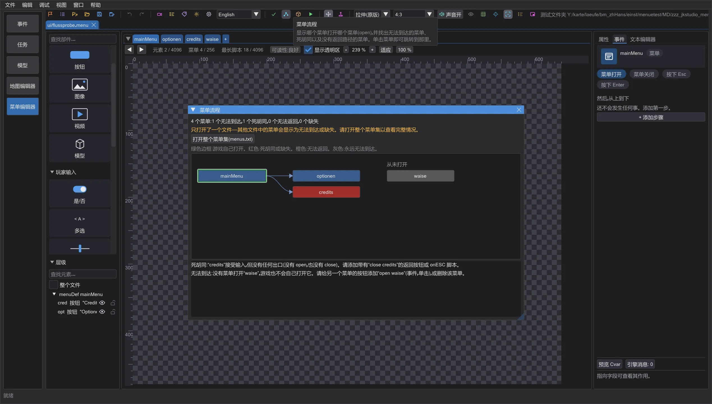
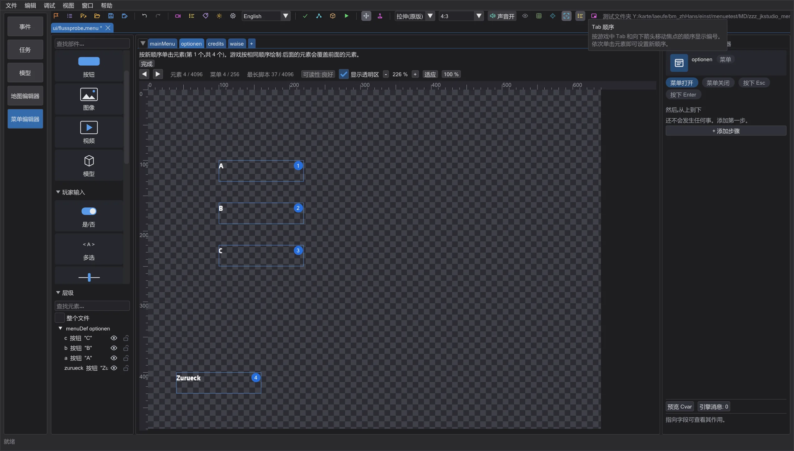
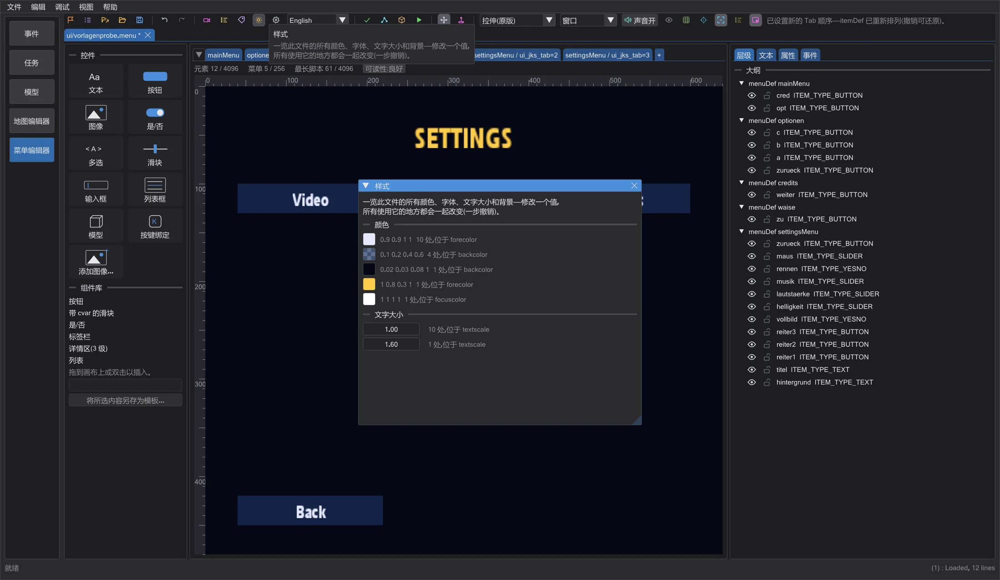
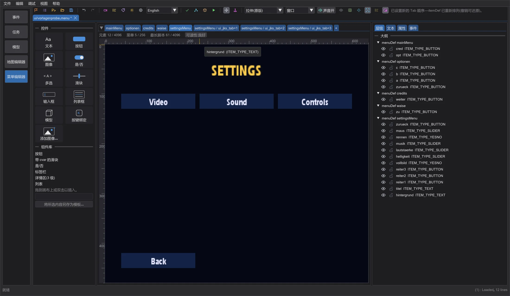
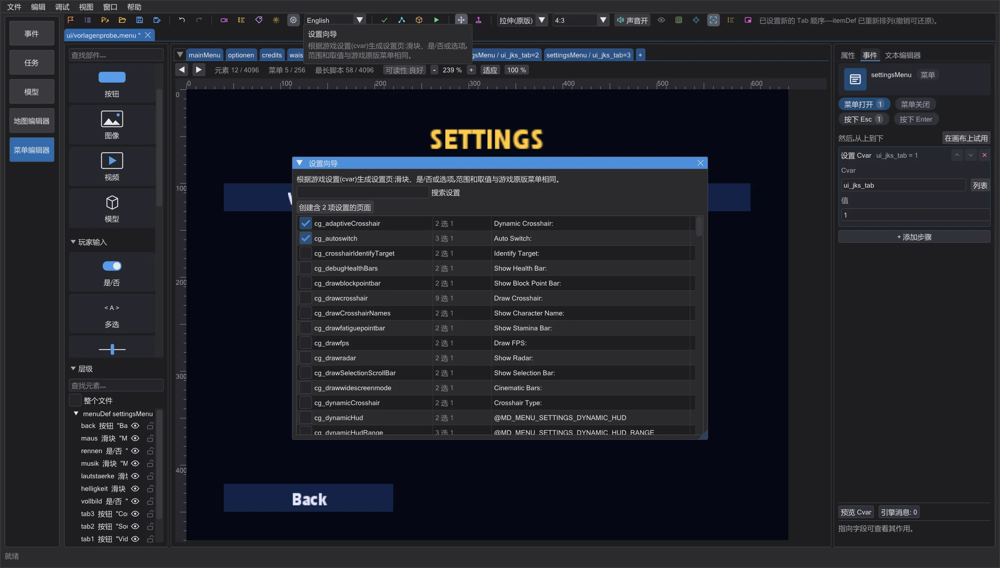
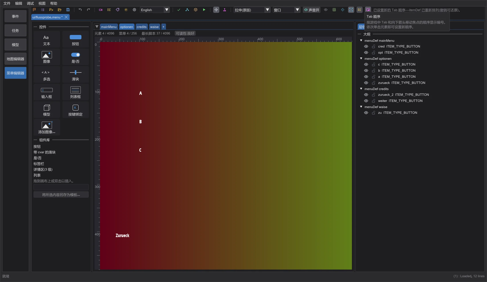
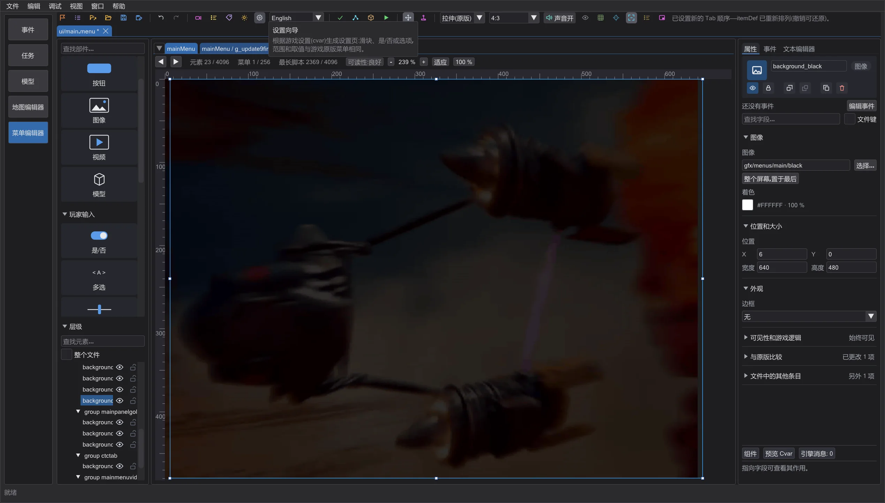

菜单编辑器:流程、Tab 顺序、样式与模板
查看哪个菜单打开哪个菜单以及玩家会卡在哪里,用单击设置键盘顺序,一次性修改所有颜色和字体,从现成的菜单或设置向导开始,照着参考图重建设计,并把元素重置为游戏原版。
菜单流程#

工具栏中的 菜单流程 把已打开文件中的每个菜单显示为方框,每个 open 显示为箭头,从游戏自己打开的菜单开始逐列排列(绿色边框:主菜单、加载画面、游戏内菜单——取自引擎代码)。红色方框是死胡同(接受输入但没有出口)或没有任何已打开文件定义的目标;橙色方框由其他菜单打开,但没有返回路径(没有关闭自身的 close、没有 onESC,也不 open 来源菜单);灰色方框永远无法到达。下方列表用通俗的话说明该怎么做。单击方框或列表中的一行即可跳转到该菜单。请先打开整个菜单集,否则其他文件中的菜单会显示为缺失。
Tab 顺序#

Tab 顺序 按引擎使用的顺序,在每个可以获得键盘焦点的元素上显示编号(Menu_SetNextCursorItem:itemDef 的顺序,不含装饰、隐藏元素和被 cvar 关闭的元素;没有焦点时,游戏从文件中的第二个元素开始)。要修改顺序,请按新顺序依次单击元素——最后一次单击后编辑器会重新排列 itemDef(一步撤销)。游戏按相同顺序绘制,因此后面的元素会覆盖前面的元素;不能获得焦点的元素保持原位。
样式#

样式 收集文件中的所有颜色(forecolor、backcolor、bordercolor、outlinecolor、focusColor、disableColor、descColor)、字体、文字大小和背景——最常用的排在前面。修改一个值,所有使用它的地方都会一起改变,在 .menu 中仍是普通的值(间距、注释和引号保持不变;一步撤销)。来自 #include 文件或宏的值会被计数,但保持不变。
模板与设置向导#

页面旁的 + 提供 空白页 或整个菜单:主菜单(游戏启动时打开)、带标签页的设置页、制作人员名单 和 加载画面(游戏加载时显示)。它们只使用每个游戏版本都能读取的关键字;主菜单和加载画面使用引擎查找的名称(单人 mainMenu 和 loadscreen,多人 main 和 Connect),主菜单会打开设置和制作人员名单模板——菜单流程显示的结果没有问题。

设置向导 列出游戏原版菜单提供的每个游戏设置(cvar),以及它们在那里使用的控件:带范围的滑块、是/否,或带选项的选择。勾选需要的设置并单击搜索框下方的按钮——编辑器会添加一个包含这些控件、标题和返回按钮的设置页。
参考图、原版与上限#

参考图 将 PNG、JPG 或 TGA 半透明地放在画布上,位于菜单下方,或在全屏背景遮住时位于上方(置于菜单上方),不透明度 可调。它只是绘图辅助,绝不会进入菜单或 pk3。

对于来自游戏的菜单,属性中的 与原版比较 会显示所选元素是否与游戏原始文件不同以及在哪些关键字上不同;重置为原版 会放回原版 itemDef(一步撤销)。页面下方的一行显示菜单相对于游戏版本上限的使用程度——每个菜单的元素、菜单数和最长脚本——80% 起为橙色,达到上限为红色,因为超出后游戏会悄悄丢弃其余部分。
在上限旁边,可读性 按编辑器的参考值(不是游戏的上限)统计提示:在 640 x 480 屏幕上低于 8 点的文字、填充区域上低于 3:1 的对比度,以及在游戏的一种语言中放得下、在另一种语言中放不下的文字(使用游戏字体和游戏数据中所有语言的文本测量)。鼠标悬停可查看带解决方法的列表;单击可选中下一个有提示的元素。
关闭含有未保存更改的标签页时,编辑器现在会先询问:保存、不保存并关闭,或取消。